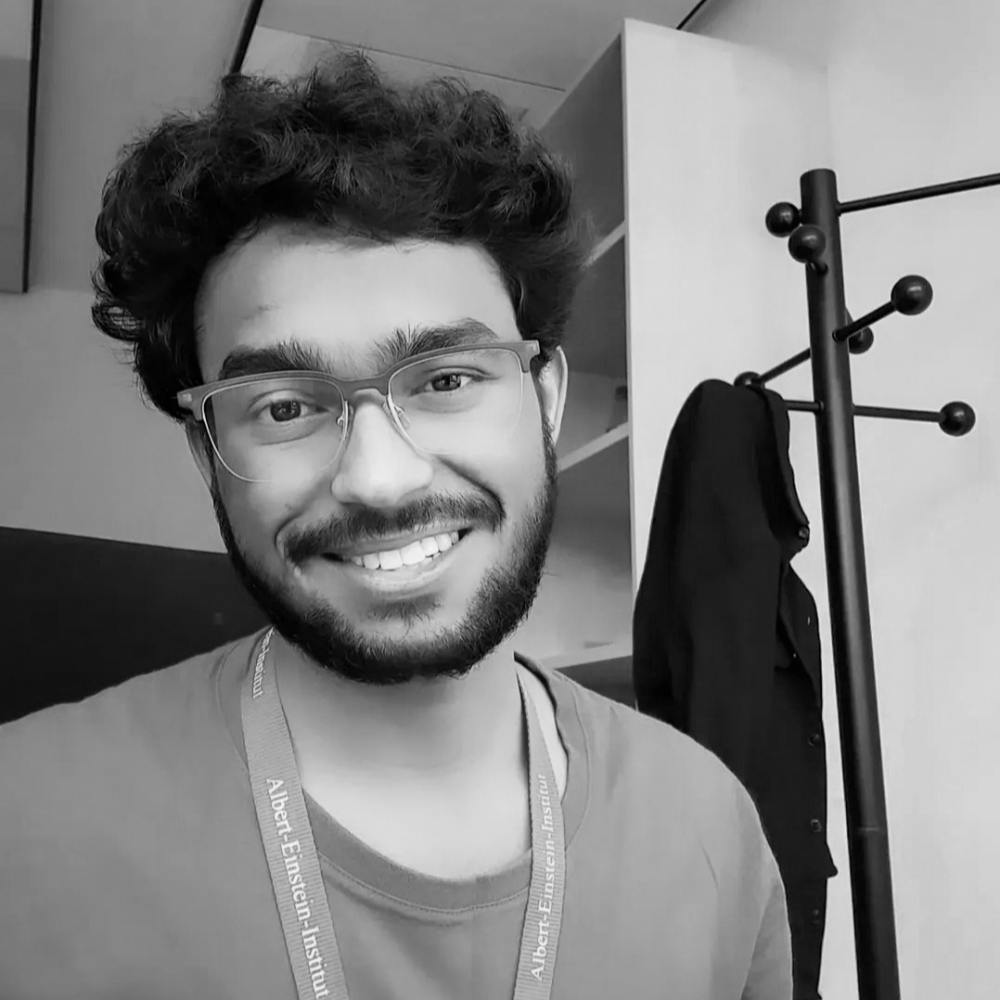

2026
Microlensing of fast and slow compact objects
Gravitational microlensing constraints on compact objects with velocities spanning \(10^{-4}c\)–\(10^{-1}c\).
arXiv:2604.25434 ↗PHYSICS · COSMOLOGY · GRAVITATIONAL LENSING
PhD Researcher · Indian Institute of Science
I work at the intersection of gravitational lensing, astroparticle physics and cosmology, with a particular interest in using gravitational lensing to explore the nature of dark matter and the Universe.

Hi, I'm Manish. I am currently pursuing a PhD in Physics at the Indian Institute of Science (IISc), Bangalore.
I have previously worked as a visiting researcher at the Max Planck Institute for Gravitational Physics (Albert Einstein Institute) in Potsdam, Germany. I hold an M.S. in Physics from IISc and a B.Sc. in Physics from St. Stephen's College, University of Delhi.
My broad research interests are gravitational lensing, astroparticle physics and cosmology. I am particularly interested in dark matter, microlensing and wave-optics effects in gravitational lensing.
Outside academia, I enjoy travelling and photography, and I am interested in communicating science in ways that make difficult ideas accessible and engaging.
My research explores the physics of dark matter and gravitational lensing, from compact objects and microlensing to wave-optics effects and new computational approaches to cosmological inference.
Explore my research →Gravitational microlensing constraints on compact objects with velocities spanning \(10^{-4}c\)–\(10^{-1}c\).
arXiv:2604.25434 ↗X-ray microlensing as a probe of primordial black holes in a mass range that is difficult to explore with conventional optical surveys.
Cosmology Seminar
Max Planck Institute for Astrophysics,
Garching
June 2026
Indian Institute of Science, Bangalore
Max Planck Institute for Gravitational Physics (Albert Einstein Institute), Potsdam
Indian Institute of Science, Bangalore
St. Stephen's College, University of Delhi